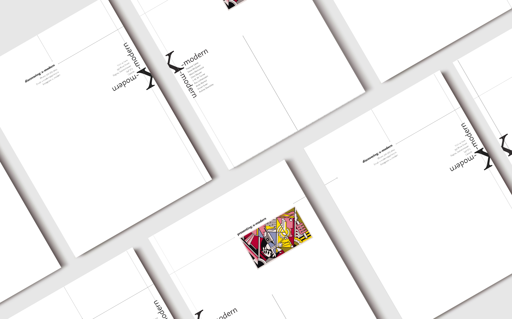
overview
creating a brochure for the x-modern magazine. texts and images provided by desn1003: typography.
tools
adobe indesign
category
post-secondary project
grid analysis
exploring and analyzing three grid systems to see layout options.
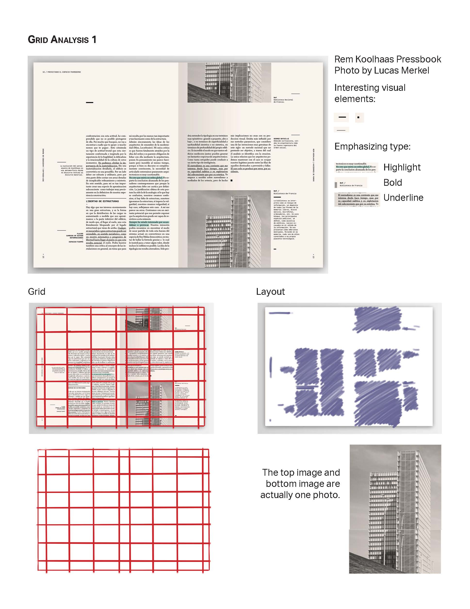
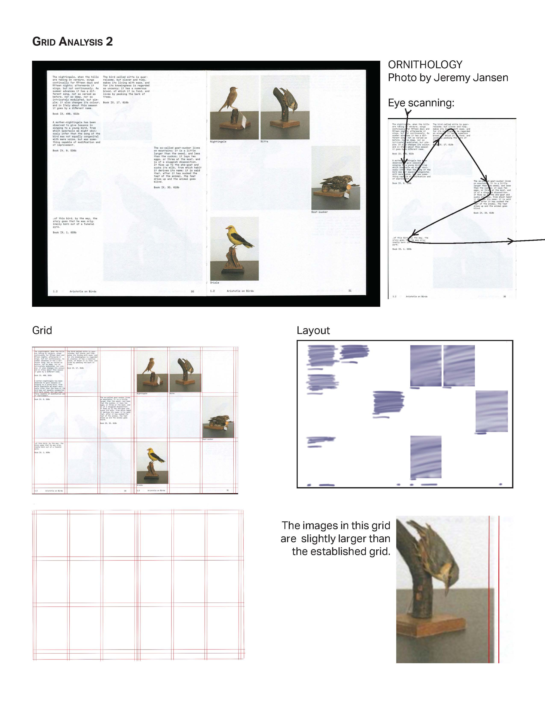
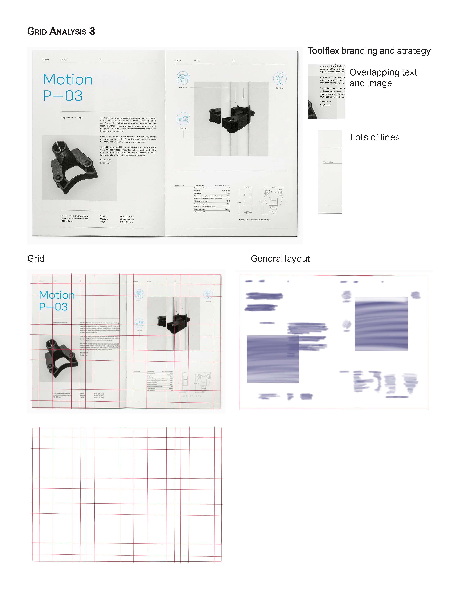
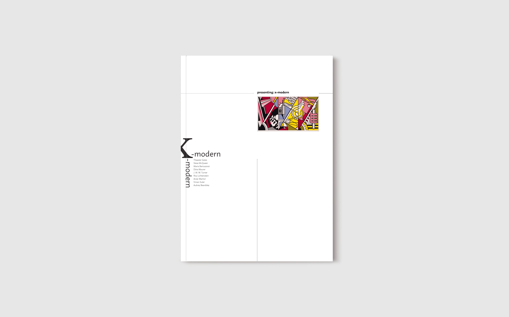
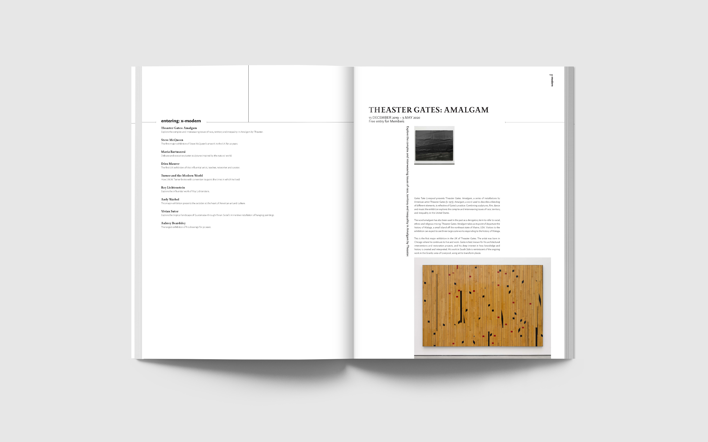
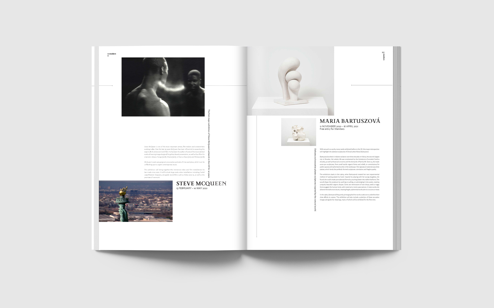
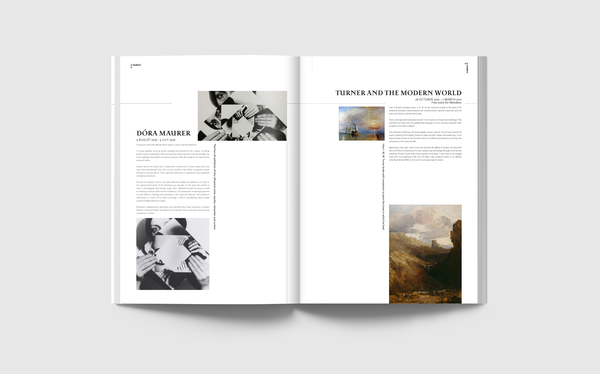
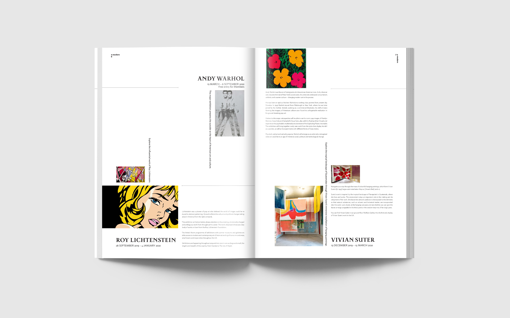
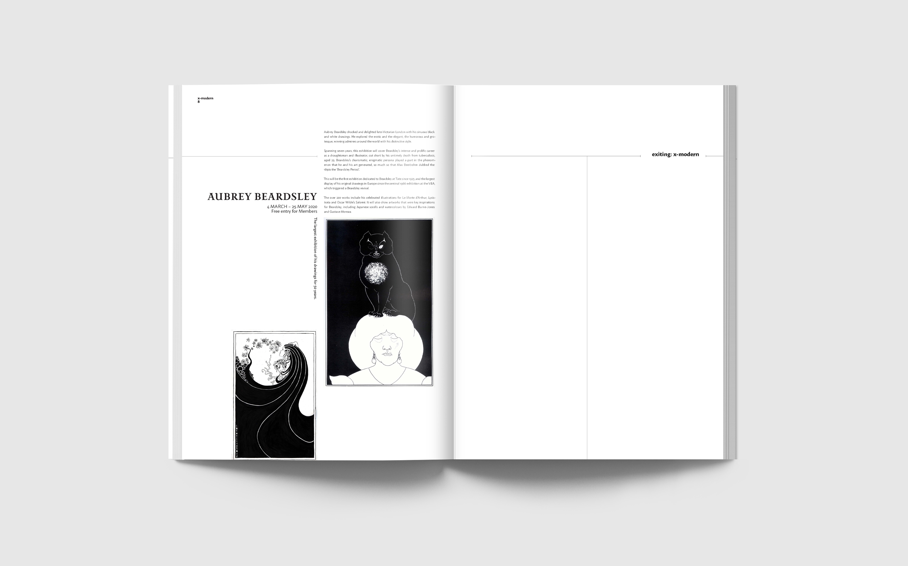
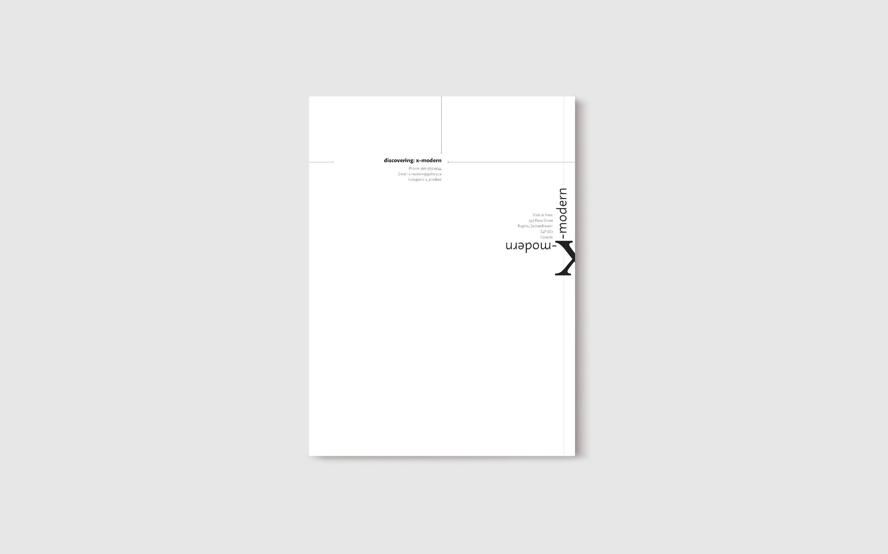